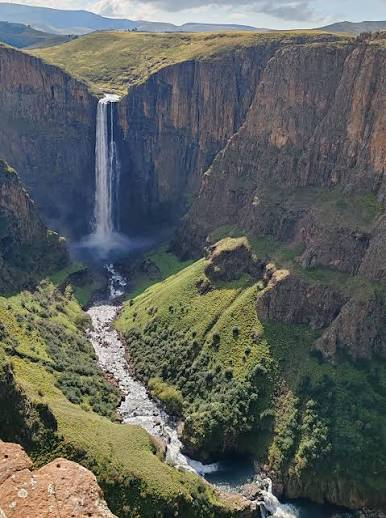

Maletsunyane Falls
Maletsunyane Falls is one of the most spectacular natural landmarks in Southern Africa, single-drop waterfall. Located in the heart of Lesotho's rugged Maloti Mountains near the town of Semonkong (which translates to the "Place of Smoke"), the waterfall plunges over a massive ledge of Triassic-Jurassic basalt into a sheer sandstone gorge. The tremendous force of the falling water generates a permanent shroud of mist and a thunderous, reverberating echo that local folklore attributes to the spirits of the gorge.

Thaba-Bosiu
Thaba Bosiu is a sandstone plateau and national monument in Lesotho, widely revered as the historic birthplace and military stronghold of the Basotho nation. Located just 24 kilometers east of the capital city, Maseru, it rises 1,804 meters above sea level and serves as the ultimate symbol of Basotho identity, resilience, and unity

Sani Pass
The Sani Pass is an iconic, rugged mountain pass that cuts through the Drakensberg Mountains. It serves as the legendary border crossing between KwaZulu-Natal, South Africa, and the "Mountain Kingdom" of Lesotho. It is widely considered one of the most thrilling and scenically spectacular dirt-road drives in Southern Africa